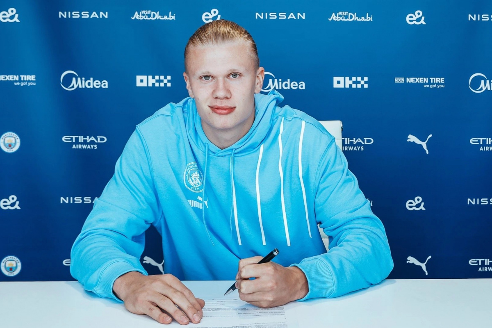

O Paris Saint-Germain definiu o preço para tirar Mbappé do clube. O clube que quiser contar com o astro francês terá que desembolsar 400 milhões de euros (mais de R$ 2 bilhões) pela multa recissória , segundo o jornal 'Mundo Deportivo'. De acordo com Transfmarket o passe do jogador esta avaliado em 180mi de Euros
Na transferência, terão de ser desembolsados mais 70 milhões de euros para o seu empresário, Mino Raiola, e seu pai. Com isso, o valor total chega a 170 milhões de euros (cerca de R$ 733 milhões).
Segundo o Transfermarkt, site especializado em transferências, o ex-jogador do Flamengo está avaliado em 120 milhões de euros (cerca de R$ 662 milhões na atual cotação)